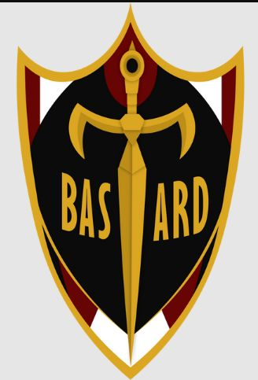

O Bastard München é um time da liga Neo egoist do mangá de blue lock, tendo jogadores importantes como Isagi e Kaiser.
Com um estilo de jogo de lógica inquestionável e racionalidade absoluta, o Bastard München é um time que executa as melhores e mais ideais jogadas com a maior eficiência possível.
Principal atacante ⚽:
O principal atacante e pivô da equipe durante a Liga Neo Egoísta é Michael Kaiser. Kaiser utiliza sua visão de campo combinada com seu posicionamento e chutes rápidos para marcar gols eficientes. Ele geralmente é auxiliado por Alexis Ness e Benedict Grim na construção de jogadas. Kaiser também usa sua visão para preencher quaisquer lacunas críticas na defesa e iniciar contra-ataques.